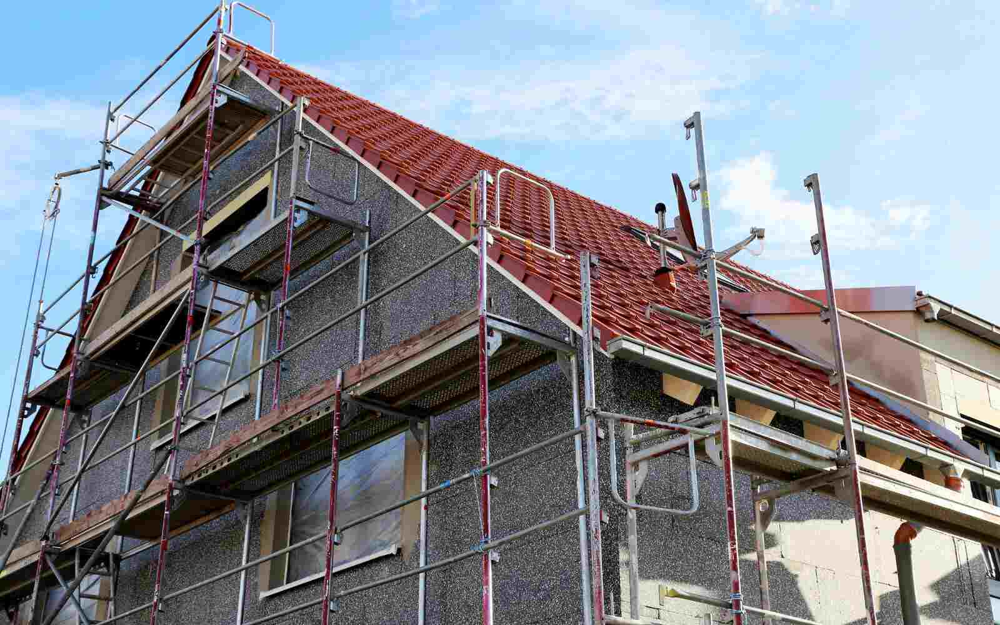
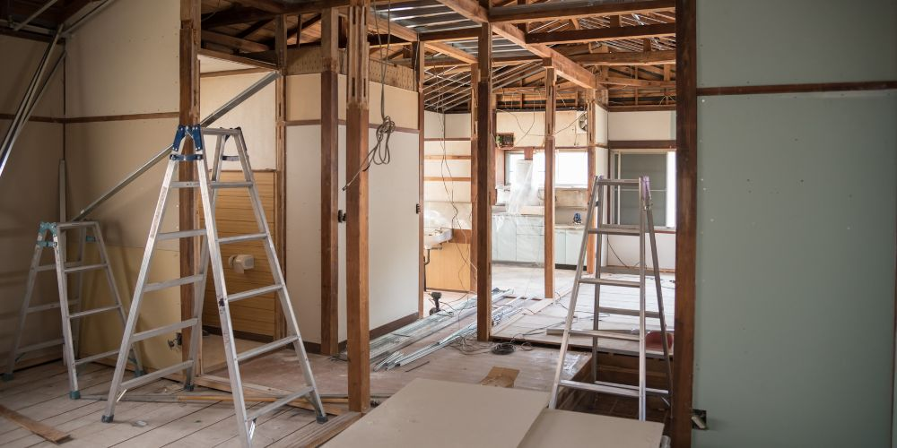

Better layout and flow
Improve how rooms connect, feel and function for more comfortable everyday living.
Home Alterations
Improve layout, flow and everyday living with practical home alterations.
If your home has enough overall space but the layout no longer works properly, home alterations can be the right solution. DM Design & Build LTD provides home alterations across Anglesey, Gwynedd and nearby areas for homeowners who want a house that feels more practical, more comfortable and better suited to modern life. Whether you want to open up internal space, improve flow between rooms or rework how the property functions day to day, we help create alterations that make the home work better.

What this service solves
Home alterations are ideal when the problem is not the size of the property, but how the space is currently laid out and used.
Good home alterations are not just about changing walls or room positions. They are about improving how the property works for the people living in it. Whether your goal is to open up the downstairs layout, improve movement through the house, create a better kitchen and dining flow or make existing rooms more useful, the right alterations can make a noticeable difference to everyday life.
Many homes have space that could work much better with the right internal changes. In some properties, that means creating a more open and connected layout. In others, it means reconfiguring rooms so the home feels more balanced, more functional and easier to use. Our home alterations service in Bangor and nearby areas is designed for homeowners who want thoughtful improvements that feel natural and worthwhile.
Better room flow and connection
More useful and practical living space
Improved kitchen, dining or family layout
Stronger day-to-day functionality
A home that feels more open and usable
Long-term value from smarter layout changes

Home alterations are often the right solution when the house already has enough potential, but the layout is not helping you make the most of it. Many homeowners in Bangor, Menai Bridge, Caernarfon, Bethesda and nearby areas want their property to feel more open, more organised and easier to live in, without the cost and disruption of moving to a different home.
Whether you want to improve an older layout, modernise how the downstairs works, make family life easier or create a better sense of space, home alterations can deliver a strong practical return. The aim is not change for the sake of it. The aim is a house that works better every day.
We provide home alterations across Anglesey, Gwynedd, Bangor and nearby areas including Menai Bridge, Caernarfon, Bethesda, Beaumaris, Llanberis, Llanfairfechan, Penmaenmawr, Y Felinheli, Llandygai, Llangefni and Gaerwen. If you are searching for home alterations in Anglesey, internal house alterations in Gwynedd, or help improving the layout of a home in Bangor, DM Design & Build LTD is here to help.
Testimonials
Feedback from homeowners who have trusted DM Design & Build LTD for practical home improvements and alteration work.
Areas we cover
We provide home alterations across Anglesey, Gwynedd and nearby parts of North Wales. If you are searching for home alterations in Anglesey, internal house alterations in Gwynedd, or layout improvements in Bangor, we are here to help.
This service supports homeowners who want to improve layout, function and day-to-day practicality through better internal use of space, smarter reconfiguration and quality building work.
FAQ
Answers to common questions about home alterations across Anglesey, Gwynedd and nearby areas.
Home alterations are changes made to improve how your house works. They can include internal layout changes, structural alterations, opening up rooms, reconfiguring space and practical improvements that make everyday living easier.
Yes. Home alterations are often the best option when the space is already there but the layout is not working well. They can improve movement, room use, storage and overall day-to-day practicality.
Yes. We provide home alterations across Anglesey, Gwynedd and nearby areas for homeowners who want better layout, improved function and stronger long-term value from their property.
No. We also work across Anglesey and Gwynedd, including nearby areas such as Menai Bridge, Caernarfon, Bethesda, Beaumaris, Llanberis, Y Felinheli and surrounding locations.
You can contact us here or call 07835 827283 to discuss your home alterations project.